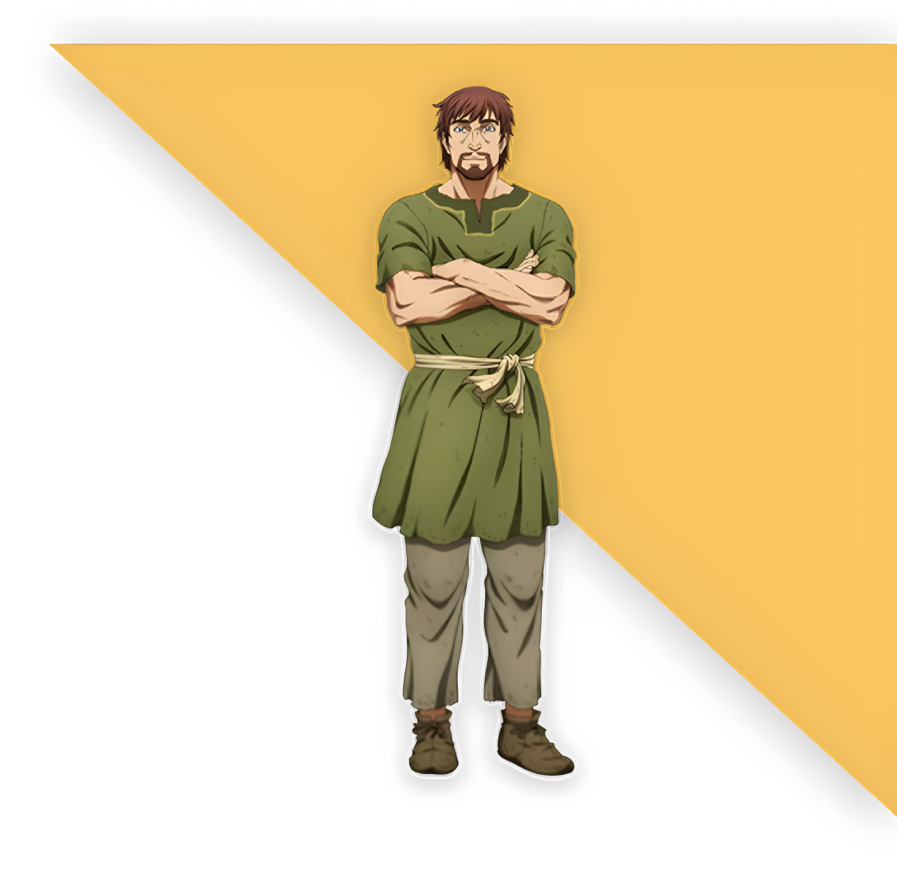

Thorfinn
Thorfinn é o protagonista da história. Filho de Thors, um guerreiro lendário que abandonou a vida de violência, Thorfinn cresce ouvindo histórias heroicas e acaba seguindo o pai em uma expedição, onde testemunha sua morte pelas mãos de Askeladd. Consumido pelo desejo de vingança, Thorfinn se junta ao bando de Askeladd, esperando a chance de desafiá-lo em um duelo justo. Ao longo dos anos, torna-se um guerreiro brutal, mas vazio. Após a morte de Askeladd, Thorfinn perde seu propósito e acaba escravizado. É durante sua vida como escravo que ele começa uma jornada de transformação, rejeitando a violência e buscando redenção ao tentar criar uma terra de paz, Vinland.
Einar
Einar é um camponês simples do norte da Inglaterra, cuja vida muda completamente após sua vila ser invadida por vikings. Ele vê sua mãe e irmã serem mortas e é vendido como escravo. Levado para a fazenda de Ketil, conhece Thorfinn, com quem desenvolve uma amizade profunda. Einar é emocional, honesto e resistente, representando o homem comum que sofre as consequências da guerra sem jamais desejá-la. Sua presença traz humanidade à história, sendo um contraste direto aos guerreiros endurecidos que o cercam. Ao longo do tempo, ele e Thorfinn trabalham juntos para comprar sua liberdade, e Einar o ajuda a encontrar um novo propósito longe da violência.
